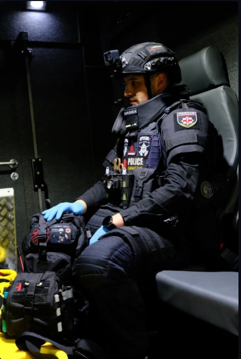

Світло та зв’язок
Як берегти заряд телефона, живити інтернет і правильно визначати пріоритети.
Немає світла, води чи газу? Повітряна тривога? «Автономно» допомагає знайти зрозумілі рішення — від найпростіших і найдоступніших до складніших. Безкоштовно, без реєстрації, працює й без інтернету.

У ситуації, коли ресурси обмежені, важливий не найдорожчий пристрій, а правильний порядок дій. Оціни небезпеку, обери безпечне рішення з того, що маєш, і дій послідовно.
Жодне побутове рішення не варте пожежі, отруєння чи травми.
Використовуй доступне, не ускладнюй без потреби.
Короткі послідовні кроки, зрозумілі навіть у стресі.
Незалежний інформаційний проєкт. Згадка про фахівців не означає офіційного схвалення чи партнерства з Національною поліцією України.
Жодної показної «виживальщини». Лише практичні напрями, з яких починається автономність. Кожен відкривається в застосунку одним дотиком.
Як берегти заряд телефона, живити інтернет і правильно визначати пріоритети.
Що підготувати та як обирати безпечні способи обігріву й забезпечення водою.
Кровотеча, реанімація з метрономом, удавлення, вміст аптечки — за порядками МОЗ.
Пріоритети для родини, запасів і зв’язку, коли звичні служби не працюють.
Не все можна передбачити.
Але до найважливішого можна підготуватися.